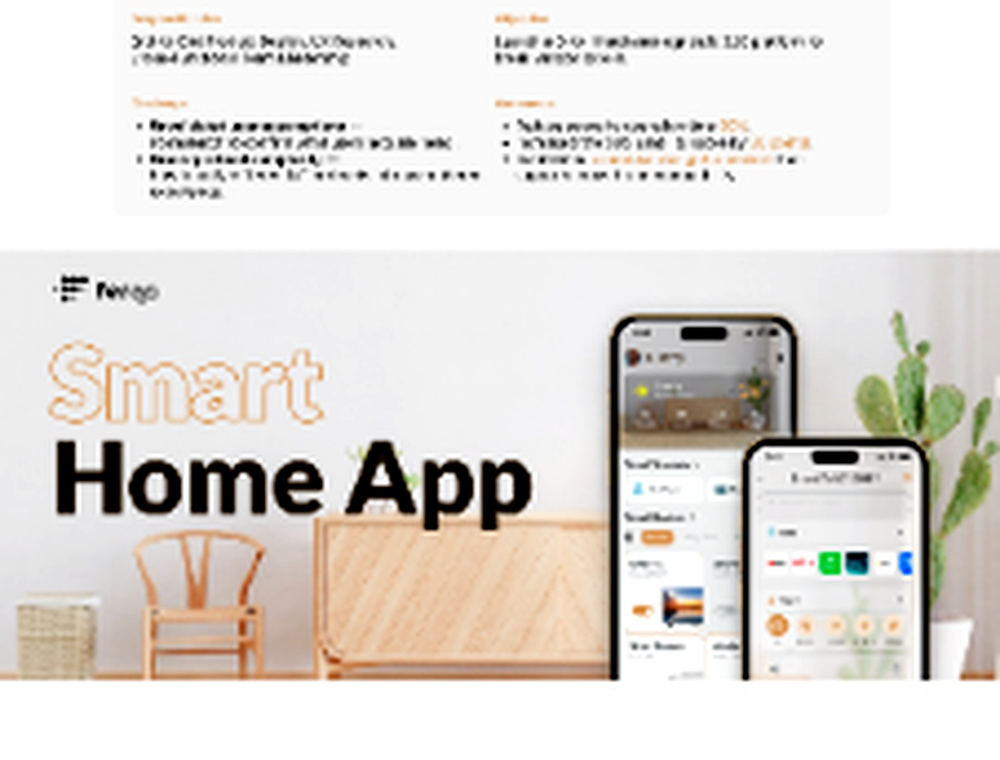
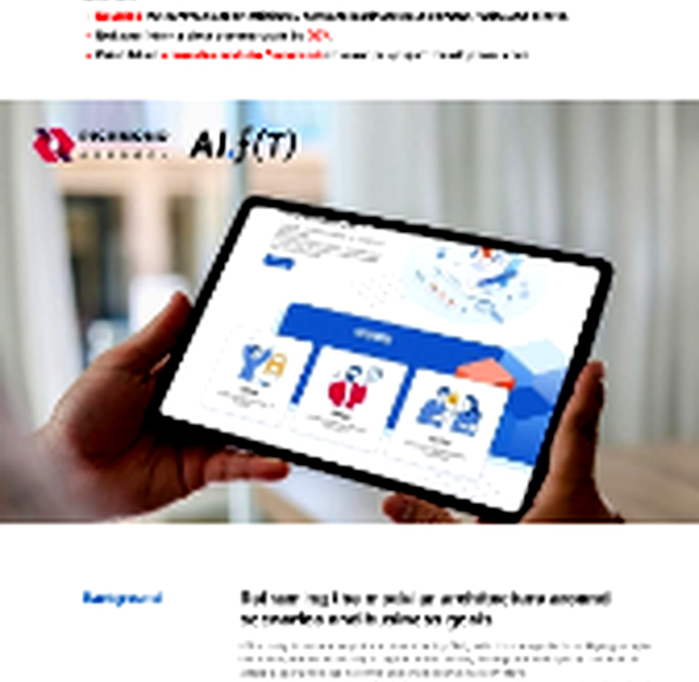
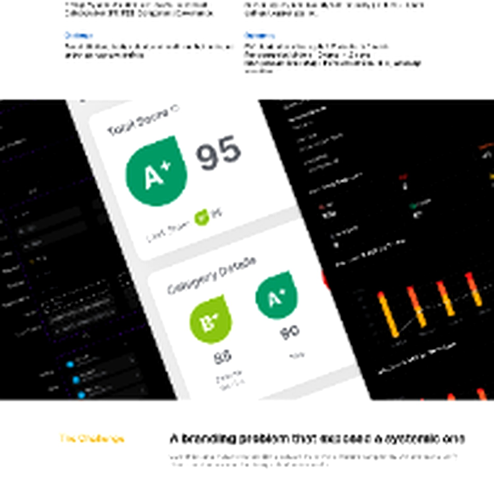
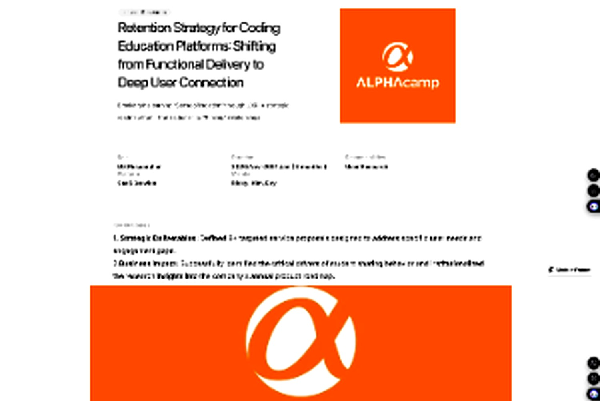
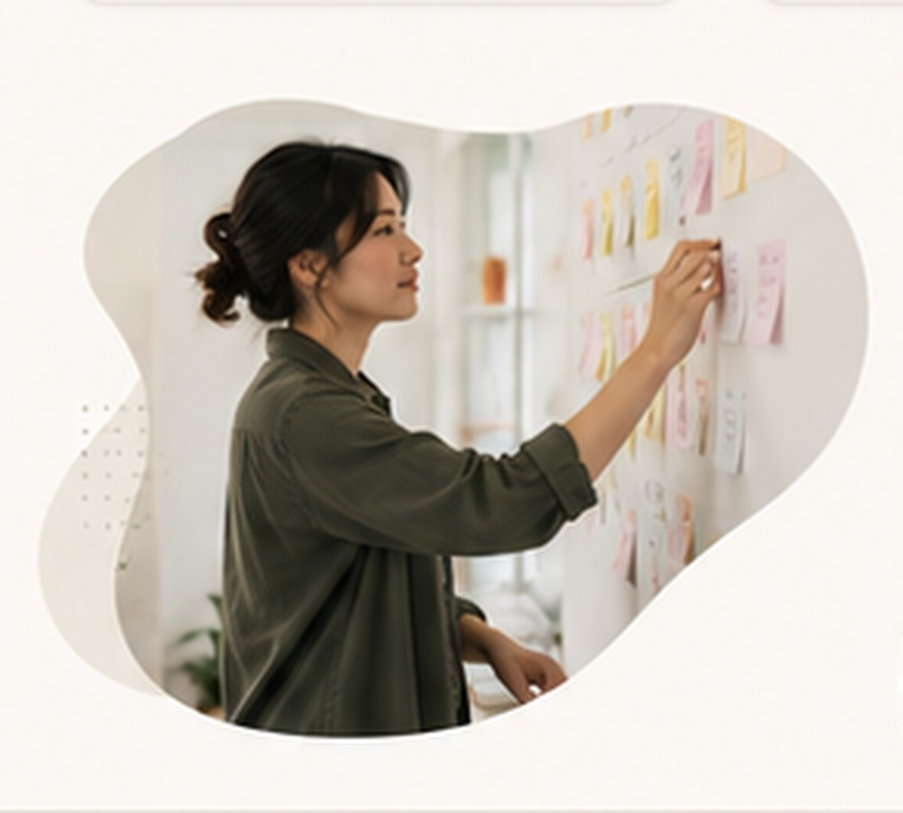

Listen first
Understand context, intent, and hidden constraints before deciding what to make.
I design complex products by listening deeply, making hidden systems visible, and helping people with different perspectives move toward one shared decision.
Four projects spanning connected homes, insurance operations, cybersecurity systems, and education strategy.

01Turning fragmented device control into a room-first, scenario-based home experience.
View case study
02Translating complex underwriting operations into a reusable, market-ready program.
View case study
03One component architecture, two distinct security brands, and a practical path to adoption.
View case study
04A research-driven retention strategy built around belonging and long-term learner identity.
View case study
I am at my best in the middle of a team: listening for what each discipline sees, translating constraints into a shared map, and giving difficult decisions enough time to become clear. I care about the interface, but I also care about the quality of the conversation that creates it.
Understand context, intent, and hidden constraints before deciding what to make.
Turn conflicting perspectives into one model the team can test together.
Connect individual screens to the product, operation, and long-term consequence.
My value is often the connective work between research, product, design, engineering, and operations.
I resist premature certainty, ask the next useful question, and make room for evidence to change the direction.
I use flows, models, prototypes, and workshops to help a team see the same system before debating the solution.
I bridge language and incentives so good ideas can survive the handoff from insight to implementation.
I make complexity discussable while preserving the constraints that actually matter.
I help teams distinguish a reversible experiment from a decision that deserves deeper care.
I involve partners early enough that the final direction belongs to the team, not only the designer.
I am interested in product and service problems where user needs, technical constraints, and organizational reality need to become one coherent direction.
Say hello ↗